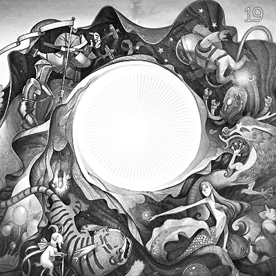

Interactive record. Each ring of grooves is a song. Press Enter to focus it and Escape to leave. Use the arrow keys to move between songs, and Enter to play one.
No.019
Nineteenth
Late yet again, but that’s only because I’ve been neck deep in work. And, I celebrated my birthday last weekend. Still hungover a bit, but life’s swell.
Also on YouTube
Tracklist
Running order
14 songs
Take it home
The inlay card
Print it, cut it out, and fold it into a cassette case. You can also copy the tracklist and rebuild the mix wherever you listen.
Side A
- Saltbreakers Laura Veirs
- Circuital My Morning Jacket
- This Electric Badly Drawn Boy
- Same Mistake Clap Your Hands Say Yeah
- Hits Me Like A Rock Cansei de Ser Sexy (CSS)
- East Harlem Beirut
- Biting Your Tail Iron & Wine
Side B
- Paris Ghost Estates
- Pumped Up Kicks (Foster the People cover) Owl Eyes
- Born Starfucker
- You Know What I Mean Cults
- Unprofessional Wrestling Art Brut
- Mindkilla Gang Gang Dance
- Before the Bridge Future Islands
Nineteenth
No.019
Nineteenth
June 2011
Monday Music Mix
A / B · 14 songs
Archive